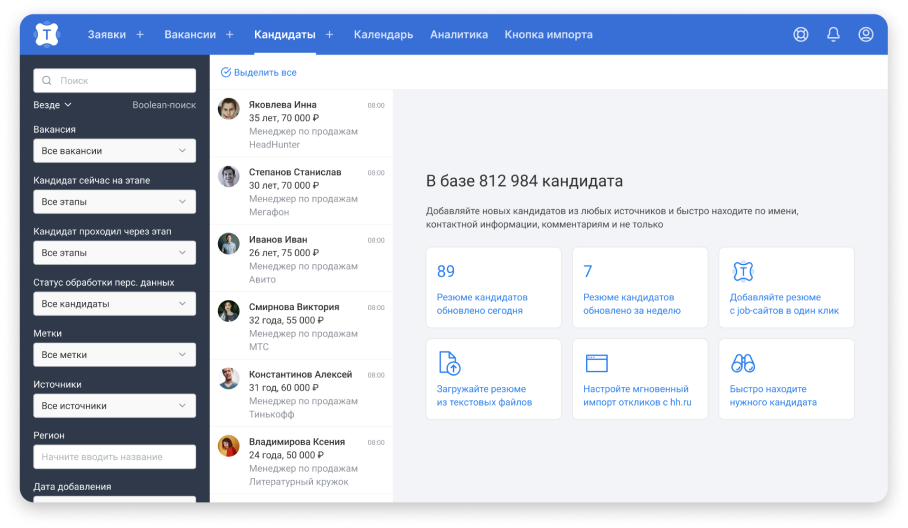
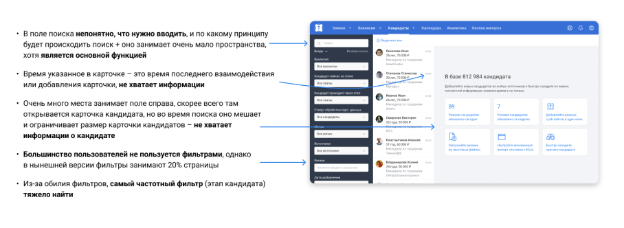
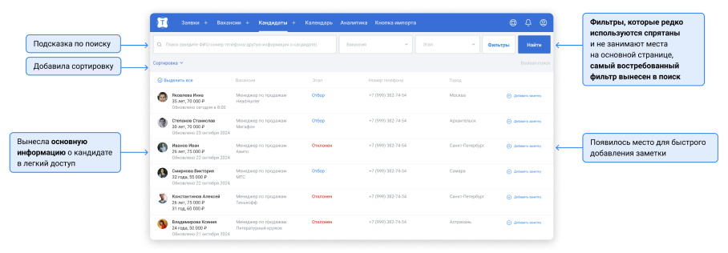
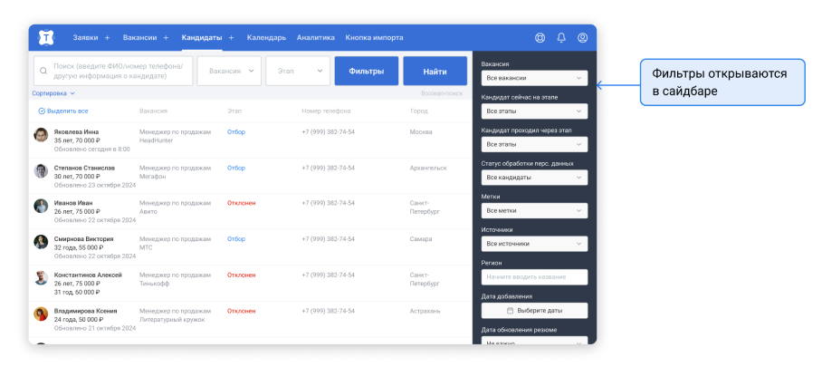
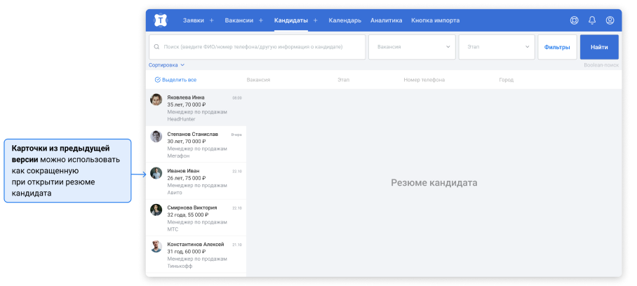

CRM-система для рекрутеров Talantix
Контекст
О компании
Talantix – это российская облачная CRM-система класса ATS, предназначенная для автоматизации подбора персонала и управления рекрутингом.
Задача: улучшить пользовательский опыт, исходя из полученных данных, не меняя основной стиль интерфейса
В задании не было четкой проблемы, необходимо было выявить их самостоятельно, основываясь на исходных данных и макетах. На тестовое задание был дан 1 день.
Research
Информация из задания
• во вкладке «Кандидаты» рекрутеры видят всех кандидатов, которых когда-либо рассматривалина вакансии в их компании
• чаще всего пользователи ищут кандидатов по ФИО и телефону
• ищут когда кандидат позвонил или написал, чтобы посмотреть его резюме, вспомнить кто это и оставить заметку
• фильтрами пользуется менее 20% пользователей
• самый популярный фильтр — кандидат сейчас на этапе

Кто наш пользователь?
Рекрутер Talantix заходит в систему для работы с конкретными кандидатами или их группой. Во вкладке «Кандидаты» в первую очередь ищет нужного человека и работает с его карточкой.
Цель
Быстро найти подходящего кандидата и получить всю необходимую информацию для работы с ним.
Основные задачи
• 🔎 Искать кандидатов
• 📄 Просматривать резюме
• 📝 Оставлять заметки
Ключевая потребность – быстро находить нужного кандидата и фиксировать информацию о нём прямо в процессе работы.
Проблемы нынешнего флоу

Гипотезы-решения
• Если убрать панель фильтров из основного сценария поиска и освободить пространство под список кандидатов, можно показать больше информации о каждом кандидате без перехода в карточку.
• Если сделать поиск более заметным и явно показать, по каким данным можно искать, пользователю будет проще находить нужных кандидатов.
• Если сократить и спрятать редко используемые фильтры, освободится пространство для основного сценария — поиска и просмотра кандидатов.
• Если вынести этап кандидата в быстрый фильтр, рекрутер сможет быстрее отбирать кандидатов по текущему этапу.
Итоговое решение
Избавилась от сайдбара и поместила все в одно окно, добавила конфигуратор с основными фильтрами, остальные вынесла в диалоговое окно


